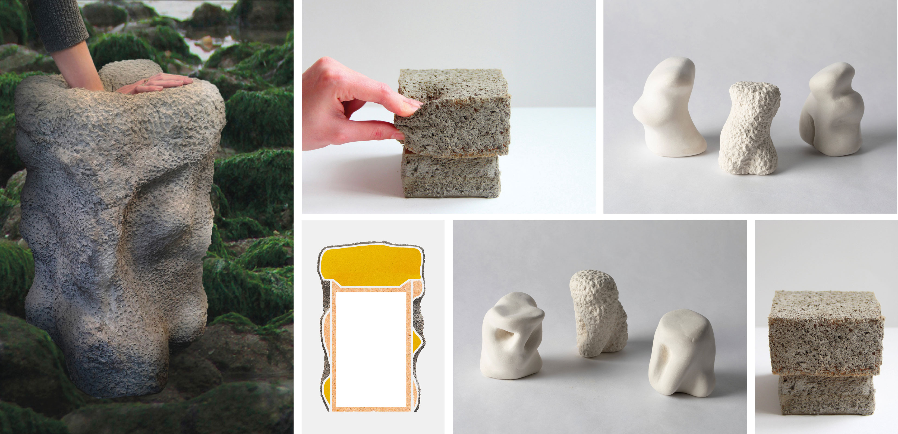
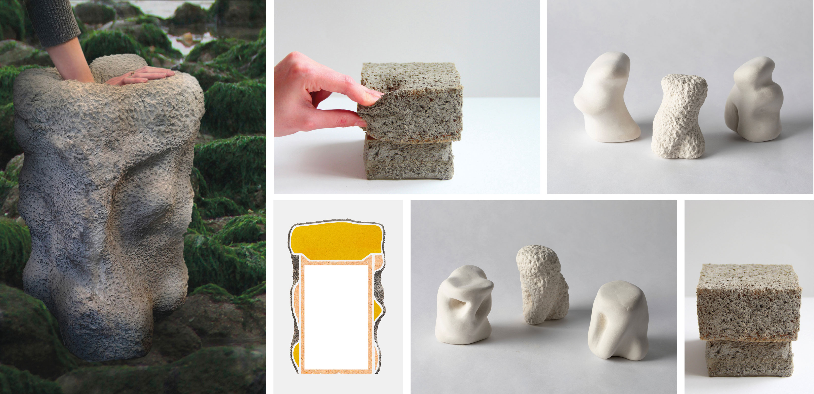

Ophite
2020
Jouant avec les sens de son utilisateur, Ophite est un tabouret s’amusant à détourner
l'aspect des matériaux qui le composent.
D’apparence similaire à de la roche, l’assise propose en réalité un certain confort,
surprenant ainsi celui qui s'y assoit, par ce contraste entre visuel et ergonomie.
Pour ce faire, il est composé d’une structure en bois sur laquelle reposent différents
blocs de mousse, amenant une souplesse à l’assise. Recouvert d’une fine couche de mortier,
son aspect final se veut rocheux et dur.
 
